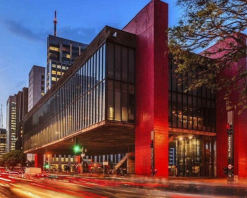
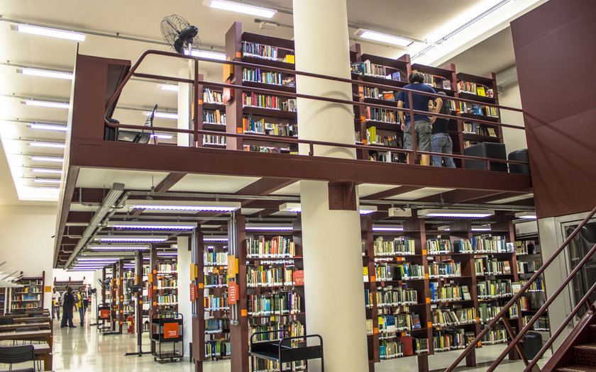

Top 3 lugares que gosto de ir
Museu de Arte de São Paulo
O museu de arte de são paulo, em relação a ponto Turistico foi o que eu mais frequentei, simplesmante magico.
Parque do Ibirapuera

O Parque do Ibirapuera foi o primeiro parque que eu fui, em dias de férias e o melhor lugar para colocar os pensamentos no lugar.
Biblioteca Mário de Andrade
A Biblioteca Mario de Andrade é um lugar que me marcou muito, onde aprendi o costume de leitura, essa biblioteca é considerada a maior biblioteca municipal do Brasil e é dona de um dos mais importantes acervos documentais e bibliográficos do país.